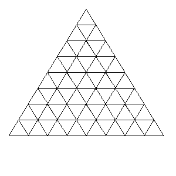

Tri-colouring a triangular grid
Problem 189
Consider the following configuration of 64 triangles:

We wish to colour the interior of each triangle with one of three colours: red, green or blue, so that no two neighbouring triangles have the same colour. Such a colouring shall be called valid. Here, two triangles are said to be neighbouring if they share an edge.
Note: if they only share a vertex, then they are not neighbours.
For example, here is a valid colouring of the above grid:

A colouring C' which is obtained from a colouring C by rotation or reflection is considered distinct from C unless the two are identical.
How many distinct valid colourings are there for the above configuration?